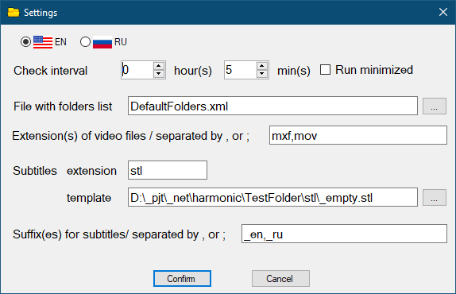

Settings

- Check interval - Interval of checks by timer
- Run minimized - Application will be run minimized if this checked
- File with folders list - File that contains the list of the hosts. It will be create automatically. You can have several such files.
- Extension(s) of video files - Enumeration of video file extensions (separated by comma or semicolon) for which the presence of subtitles is checked.
- Subtitles extension - Extension of the subtitles files.
- Subtitles template - The subtitles file that are will copy instead of missing subtitles.
- Suffix(es) for subtitles - Enumeration of language suffixes (separated by comma or semicolon) for which the presence of subtitles is checked.
The suffixes and extensions must be placed on one line, separated by , or ; Spaces are considered!